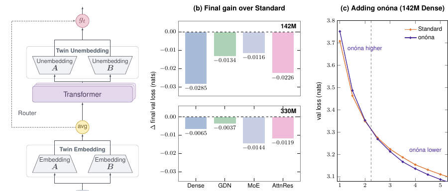

onóna: Twin Embeddings with Tied Unembeddings

onóna uses two vocabulary tables for both input embeddings and output prediction. The Transformer reads their average; a gate conditioned on the input token mixes the two output distributions. The model body stays unchanged.
onóna 用两张词表同时构造输入嵌入和输出预测。Transformer 读取两者的平均值；由输入 token 决定的门控混合两个输出分布，模型主体无需修改。
Results实验结果Across 142M, 330M, and 1B dense and alternative architectures, matched-budget comparisons improve validation loss and external perplexity in 11 of 12 settings, and average downstream accuracy in 10 of 12.
在 142M、330M 和 1B 规模的稠密模型及其他架构中，相同训练预算下，12 组比较中有 11 组改善验证损失和外部困惑度，10 组提高下游任务平均准确率。
Authors作者 Links相关链接